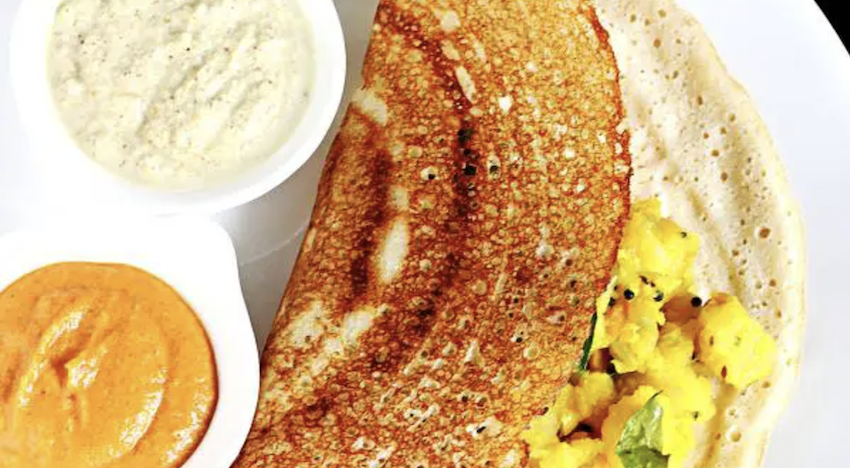

Dosa Recipe

Dosa a healthy protein rich breakfast.
Dosa is a popular south indian thin crepe made with fermented rice and lentil batter
Ingredients
- urad dal
- chana dal
- methi seeds
Intsructions
- wash all the ingredients
- put all the ingredients in a mixie and grind to abtain a smooth batter
- pour the batter onto a hot iron cooking utensil
MAIN